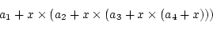
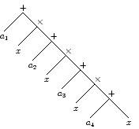
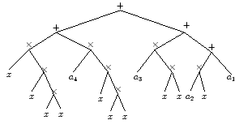

| Choisissez votre langue ! | Choose your language ! |
La suite des calculs à faire est indiquée soit par un parenthèsage explicite, soit par des 'règles d'usage' concernant la priorité des opérateurs ou le 'sens de circulation' prédéfini en cas d'associativité.
Le processus d'évaluation se présente donc comme un 'programme' que l'on peut généralement représenter sous forme 'd'arbre' .
La racine de l'arbre constituant le résultat, les feuilles représentant les constantes ou des valeurs que l'on substitue à des 'inconnues' (variables) figurant dans l'expression.
Le calcul automatique des expressions est un processus que l'on nomme 'compilation' (ce mot a aussi d'autres sens en informatique).
The schedule of computations is indicated either by explicit parentheses or by 'usage rules' concerning priority (precedence) of operators and 'circulation' right->left or left->right predefined for every associative operator.
The evaluation process appears so as a 'program' (schedule) that is possibly represented by a diagram in shape of a 'tree' .
The root of the tree being the result, and the leaves the atomic constituents (variables, constants).The automatic evaluation of expressions is a process named 'compilation' (This word has other meaning in computer science close to 'translation').
| Expression | Arbre correspondant | Et voici un autre arbre (plus compliqué) correspondant au même calcul développé |
|  |  |  |
| Expression | Corresponding tree | Another tree (more complex) for the same computation |
Voici un exemple de programme d'évaluation d'une expression numérique à valeurs réelles donnée sous forme de chaîne, sans espaces et entièrement parenthésée.
Voici un exemple de programme d'évaluation d'une expression numérique à valeurs entières donnée sous forme de chaîne, utilisant les modules Lex et Yacc d'analyse syntaxique.
Le module MTH229 qui intègre SymPy possède un puissant analyseur syntaxique ('parser'), capable de détecter toute expression bien formée à partir de constantes, de variables déclarées, d'opérateurs et d'appels de fonctions, et d'évaluer cette expression par substitution de valeurs aux variables.
Here is an example of an evaluation program for a nulmerical expression with real values given as a string, without blanks and with all parentheses (no implicit rules).
Here is an evaluation program for a numerical expression with integral values, given as a chain and using the Yacc and Lex libraries.
The MTH229 package which includes SymPy as a very powerful parser, able to detect every expression with correct syntax, and to evaluate this expression in any given environment.
|
Création Gilles Dubois
Created by Gilles Dubois
|
Janvier 2022
January 2022
|
Version mobile Jquery
Mobile Jquery version
|